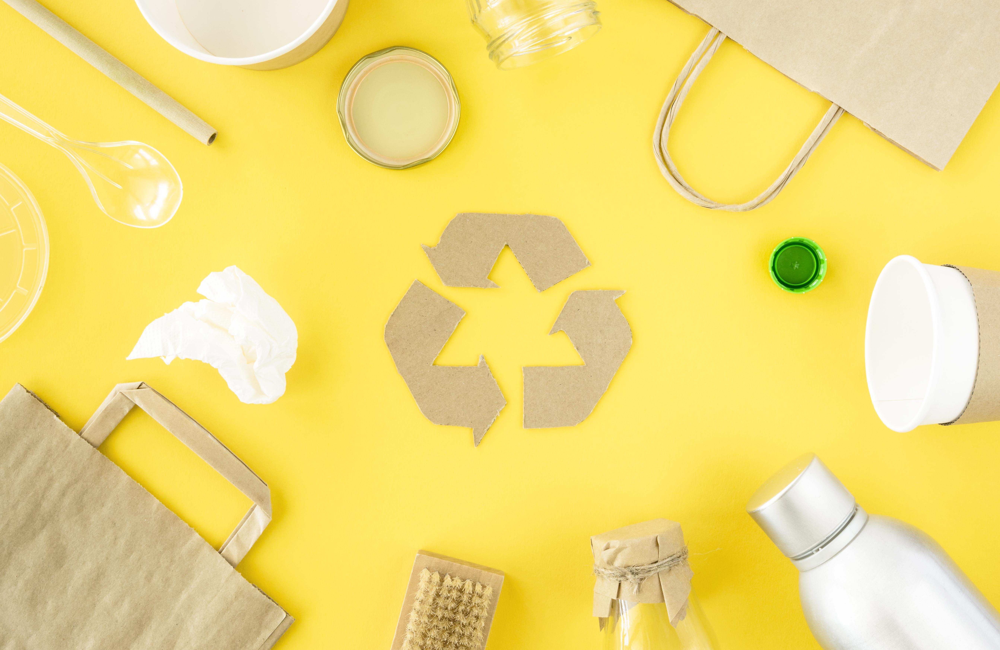

What "Eco-Friendly" mean

This word clearly defines a product which is not environmentally damaging. It can be more complex than that, though, because there are many reasons that may be "harmful to the environment. " So many different items can have a detrimental effect on the environment, such as not using appropriate protocols when goods are disposed of.
There are, however, many advantages of using eco-friendly goods that are not only based on the Earth's health and well-being, but also your family's health and well-being.